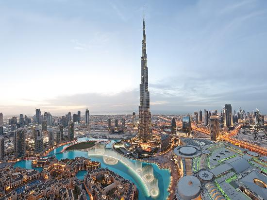
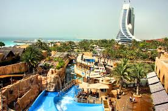
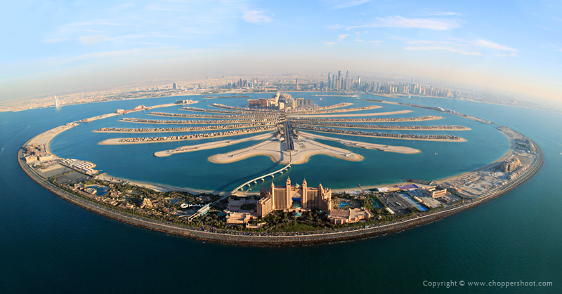

Burj Khalifa has redefined what is possible in the design and engineering of supertall buildings. By combining cutting-edge technologies and cultural influences, the building serves as a global icon that is both a model for future urban centers and speaks to the global movement towards compact, livable urban areas. The Tower and its surrounding neighborhood are more centralized than any other new development in Dubai. At the center of a new downtown neighborhood, Burj Khalifa's mixed-use program focuses the area's development density and provides direct connections to mass transit systems.
Wild Wadi

At Wild Wadi, we know that we're only as good as our rides. That's why we have the best and widest selection in the U.A.E. We have rides to suit all ages and sizes.
Relax and enjoy metre high waves of Flood River and long, lazy river of Juha's Journey.The little ones will love the kids activities at Wild Wadi which include racing slides and water guns!
But for those thrill seekers amongst you, check out the adrenaline fuelled rides at Wild Wadi Water Park including the incredible Tantrum Alley and Burj Surj!
Last but by no means least, our Wipeout and Riptide Flowriders offer the ultimate surfing experience. One of the only four such rides in the world, the Wipeout Flowrider is a blast.
Dubai Mall

The Dubai Mall is a shopping mall in Dubai. It is the world's second largest shopping mall based on total area behind the West Edmonton Mall, in Edmonton, Alberta, Canada and fourth largest by gross leasable area. Located in Dubai, (U.A.E), it is part of the 20-billion-dollar Downtown complex, and includes 1,200 shops. Access to the mall is provided via Doha Street, rebuilt as a double-decker road in April 2009.
Twice delayed, Dubai Mall opened on 8 May 2009, with about 635 retailers, marking the world's second largest-ever mall opening in retail history behind West Edmonton mall in Canada. However it is not the largest in gross leasable space, and is surpassed in that category by several malls including the New South China Mall, which is the world's largest, albeit largely derelict, Golden Resources Mall, SM City North Edsa, and SM Mall of Asia.
Palm Islands

Palm Islands are two artificial islands, Palm Jumeirah and Palm Jebel Ali, on the coast of Dubai, United Arab Emirates. As of November 2014, only Palm Jumeirah has been completed. This island takes the form of a palm tree, topped by a crescent. When complete, Palm Jebel Ali will take a similar shape; both islands will be host to a large number of residential, leisure and entertainment centres and will add a total of 520 kilometres of non-public beaches to the city of Dubai. The creation of the Palm Jumeirah began in June 2001. Shortly after, the Palm Jebel Ali was announced and reclamation work began. A third island was planned and construction started, but this project was later remodelled and renamed to Deira Island.